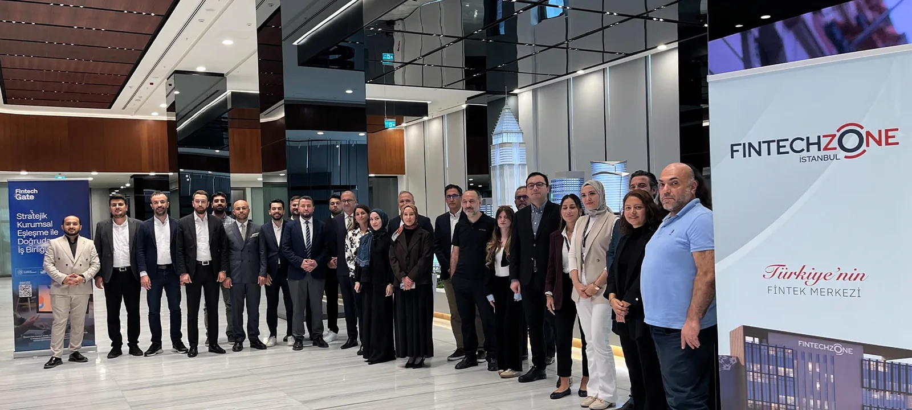
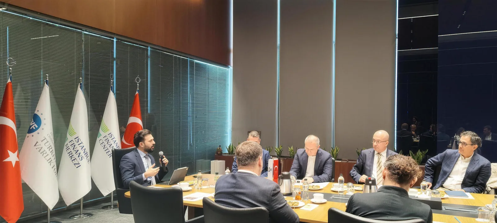
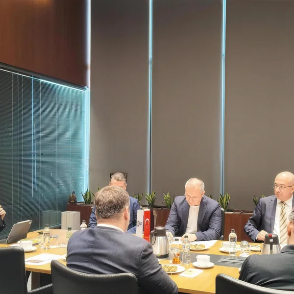

Fintech Gate Kurumsal Paydaşlar Çalıştayı gerçekleştirildi.
Çalıştay kapsamında; kurum içi inovasyon ile girişim çevikliğinin doğru zeminde nasıl buluşturulabileceğini, PoC (Kavram Kanıtlama) süreçlerinden ticarileşmeye uzanan yolun nasıl hızlandırılabileceğini ve gerçek anlamda kazan-kazan yaklaşımı sunan katma değerli iş birliği modellerinin dinamiklerini ele aldık.

Fotoğraf: Fintech Gate Kurumsal Paydaşlar Çalıştayı, 22 Eylül 2026, İstanbul Finans Merkezi.
İstanbul Kalkınma Ajansının (İSTKA) desteğiyle yürütülen Fintech Gate projesiyle ekosisteme katkı sağlamayı, kurumlar ile girişimler arasındaki iş birliklerini geliştirmeyi ve paydaşlar arasındaki sinerjiyi güçlendirmeyi hedefliyoruz.
Fintech Zone İstanbul, çalıştayımıza değerli katkılarından dolayı eğitmenlerimize ve paydaşlarımıza teşekkür ediyoruz.
Katılımcılar
- Visa Türkiye
- Craftgate
- Vakıf Katılım
- Ziraat Teknoloji
- Architecht
- Paynion Bilişim A.Ş.
- Zanha Grup
- Kuveyt Türk Katılım Bankası
- Matriks Finansal Teknolojiler
- İstanbul Kalkınma Ajansı (İSTKA)



Bu yayın, İstanbul Kalkınma Ajansının desteklediği “İş Birliği İstanbul – Kurumsal Şirketler ile Startuplar Arası İş Birliklerini Güçlendirme Mali Destek Programı” kapsamında hazırlanmıştır. İçerik ile ilgili tek sorumluluk Fintech Zone İstanbul'a aittir ve İstanbul Kalkınma Ajansı ile Kalkınma Ajansları Genel Müdürlüğü'nün görüşlerini yansıtmaz.